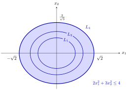

Sublevel Sets of Convex Functions¶
Proposition¶
Let be a convex set and let .
- If is convex, then the sublevel set is convex.
- If is concave, then the superlevel set is convex.
The sets may be empty; the empty set is convex by convention.
Interpretation¶
Flood the graph of a convex function up to height : the part of the domain under water, where , is a convex set. A convex function has one valley, and every horizontal cut through it gives a convex region.

The figure shows the convex function of Example 1 below through its sublevel sets , and : filled ellipses, nested because for . The largest, shaded, is the ellipse of Example 1, with semi-axes and . Each horizontal cut of the bowl-shaped graph gives one of these convex regions.
The proof is one line. For and , convexity gives . Geometrically, is the horizontal slice at height of the convex epigraph. The same argument with in the last step shows that the strict sublevel set is convex too. For a concave function the picture is turned upside down and the hypograph is sliced.
Only sublevel sets are guaranteed. The level set of the convex function is a circle, and its superlevel set is the plane with a hole; neither is convex. The converse of the proposition fails as well: a function with convex sublevel sets need not be convex (Example 4 below). This is the common misconception, and it is turned into a definition: such functions are called quasi-convex.
Sublevel sets are the standard way to describe convex sets by inequalities. A closed halfspace is a sublevel set of an affine function, and a set given by several inequalities with convex is an intersection of convex sets, hence convex. This is why the feasible set of a convex optimization problem, whose constraint functions are convex, is convex.
Key Results¶
- If is convex on the convex set , then is convex for every .
- If is concave on , then is convex for every .
- The strict sublevel sets of a convex function are convex as well (the same proof with a strict last inequality).
- For convex on , the set is convex, as an intersection of convex sublevel sets.
- If is convex, every sublevel set is closed and convex: is continuous on , and is the preimage of the closed set under the continuous function .
- The converse is false: convex sublevel sets for every do not imply that is convex (Example 4 below).
Examples¶
1. An ellipse. The set is the sublevel set of . This is convex as a sum of nonnegative multiples of the convex functions and , so is convex, and closed because is continuous.
2. Strict inequalities and halfspaces. The set is the intersection of the strict sublevel set of a convex function with the sublevel sets and of affine functions. All three are convex, so is convex. Unlike , it is not closed: the points lie in for , but their limit satisfies .
3. Superlevel sets of a concave function. For the concave on , is the closed disc of radius for , the single point for , and for . All of these are convex.
4. Convex sublevel sets without convexity. Let on . For , , and for , ; every sublevel set is convex. But is not convex: with , and , .
Prerequisites¶
Related Concepts¶
- Quasi-Convex Function
- Quasi-Concave Function
- Epigraph
- Hypograph
- Halfspace
- Intersection and Sum of Convex Sets
- Continuity of Convex Functions
- Set of Minimizers of a Quasi-Convex Function
Sources¶
- Math VI: Convexity and Optimization · Week 1
- H. E. Nusse and M. Dienstknecht, Math VI: Convexity and Optimization, lecture notes 2026–2027, Section 1.2
Aliases: sublevel set, lower level set, superlevel set, upper level set, superlevel sets of concave functions Keywords: L_{\alpha}={\boldsymbol{x}\in D\colon f(\boldsymbol{x})\leq\alpha}, U_{\alpha}={\boldsymbol{x}\in D\colon f(\boldsymbol{x})\geq\alpha}, convex function has convex sublevel sets, concave function has convex superlevel sets, converse fails Symbols: alpha, beta, element of, infinity, lambda, real numbers, square root, subset
Last updated: 5 November 2026 12:47
Sublevel Sets of Convex FunctionsConvex Optimization ProblemQuasi-Concave FunctionQuasi-Convex FunctionSet of Minimizers of a Quasi-Convex FunctionConvex Set in R^nConvex and Concave Functions on R^nLevel Set and Level CurveEpigraphHypographHalfspaceIntersection and Sum of Convex SetsContinuity of Convex Functions